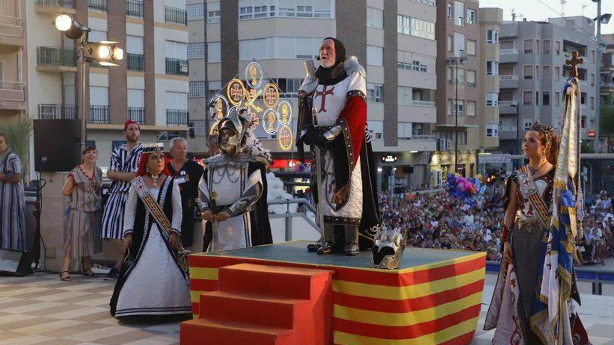

Calendario de Festividades
Guardamar es un pueblo rico en tradiciones que celebra sus eventos más importantes durante la época estival con color, música y pólvora.
- Hogueras de San Juan (23 de Junio): Noche mágica de la 'Llegà' con la tradicional quema de la hoguera en la playa y baños nocturnos en el mar.
- Leyenda de L'Encantà (Mediados de Julio): Representación teatral sobre la playa de una antigua leyenda local llena de misticismo y luces.
- Moros y Cristianos en honor a San Jaime (Segunda quincena de Julio): Las fiestas patronales con espectaculares desfiles de comparsas icónicas como Mosqueteros, Tuareg o La Pluma.
Mi Opinión
Las fiestas patronales de Guardamar son el momento de mayor alegría de todo el año. Vivir la representación de L'Encantà en la noche y ver el colorido vestuario de comparsas como los Mosqueteros o los Tuareg en los desfiles es una experiencia mágica. La implicación de todos los vecinos e historia que transmiten hace que estas fechas sean la mejor época para sumergirse por completo en las tradiciones de nuestro pueblo.